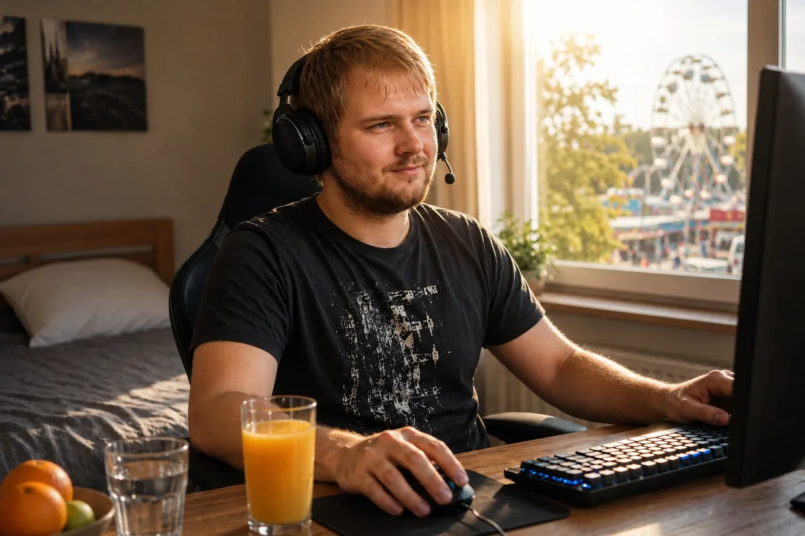

Biografía extensa, parte 2: la prueba más dura
Quien haya leído mi historia hasta aquí podría pensar: «Bien, venció el primer episodio de acúfenos. Final feliz». Pero la verdad es que lo peor todavía estaba por llegar. El verdadero colapso de mi cuerpo, que puso mi vida en peligro, aún me esperaba.
¿Buscas la versión breve? Esta segunda parte entra en todos los detalles: el colapso que me llevó al síndrome de fatiga crónica (SFC), el callejón sin salida de los 6800 euros y el experimento deliberado con ruido. Si prefieres una versión más compacta, la historia breve es el lugar indicado.
La reacción en cadena fatal: el colapso que me llevó al SFC

Es extremadamente importante dejar clara una cosa desde el principio: este colapso no fue el «precio» de la curación de los acúfenos. Los acúfenos en sí no fueron la causa. Fue más bien una reacción en cadena fatal que, por otra vía, desequilibró por completo mi sistema. Una combinación de varios factores masivos dejó literalmente agotados por completo mi cuerpo y mi sistema nervioso:
- El trauma de fondo: todavía llevaba dentro un trauma psicológico profundo que no había procesado (provocado por un mal viaje extremo con drogas a finales de 2010). Había omitido este detalle de forma deliberada en la primera parte de mi historia, porque allí el tema principal era el daño físico del oído y no quería desviarme de él. Pero para este colapso total del sistema se había convertido en un factor masivo: mantenía mi sistema nervioso bajo un estrés permanente, latente y de fondo.
- Los efectos posteriores de la cortisona: las potentes infusiones médicas habían puesto químicamente mi cuerpo en un estado artificial de vigilia permanente.
- La paradoja de la energía, el ritmo del sueño y la trampa de los suplementos: quien lea con atención podría preguntarse con toda razón: «Un momento… Si se encaminaba de frente hacia un SFC grave, ¿cómo podía pasar algunas noches enteras despierto, mantenerse activo durante un tiempo extremadamente largo y, a la vez, tener además fuerza suficiente para curar sus acúfenos? ¡Eso no encaja en absoluto!». La respuesta es una paradoja biológica traicionera: en aquel momento todavía no tenía un SFC plenamente desarrollado (eso llegó mucho después con la infección por el virus de Epstein-Barr, cuando yo ya me había curado por completo de los acúfenos). Todo lo contrario: ¡desde un punto de vista físico, mis células disponían incluso de muchísima energía en relación con su consumo! Por las noches estaba extremadamente acelerado, no lograba calmarme y todo mi ritmo de sueño se desplazó de forma masiva hacia horas cada vez más tardías. Me espoleaba con un estilo de vida excesivo, cargado de azúcar y cafeína, y seguía tomando precisamente los suplementos estimulantes que me habían ayudado durante el primer episodio de acúfenos. Esta combinación me catapultó a un «overdrive» absoluto. Y sí: ¡esa energía desbordante fue precisamente la que mi cuerpo utilizó para ir curando poco a poco y con éxito los acúfenos (en combinación con la protección estricta de los oídos)! Pero el precio de aquel modo de vida fue fatal: quien conduce el motor sin parar en la zona roja más profunda genera un desgaste extremo. La sobreestimulación despiadada del sistema nervioso, el sueño antinatural y el funcionamiento constante a pleno gas provocaron una acidificación celular masiva y una acumulación masiva de residuos. En esa fase yo percibía energía, sí, pero semana tras semana destrozaba mi batería celular hasta dejarla literalmente rota y agotada por completo.
- El arrasamiento químico del intestino (antibióticos y protectores gástricos): a todo aquel estrés nervioso y físico se sumó otro factor corporal masivo. Como me detectaron Helicobacter pylori, tuve que completar una agresiva terapia triple con antibióticos y después me tragué durante tres meses enteros potentes inhibidores de la acidez (como protección gástrica). Fue el golpe mortal absoluto para mi flora intestinal. Como alrededor del 80 % del sistema inmunitario humano se encuentra en el intestino, sin saberlo había volado por completo por los aires mi principal línea de defensa física.
Llevaba mi motor interno como un deportivo al máximo de revoluciones, pero sin una sola gota de aceite. La sobreestimulación crónica y la destrucción del intestino habían puesto sistemáticamente de rodillas a mi sistema inmunitario. Y justo en aquel momento de debilidad absoluta ocurrió: me contagié del virus de Epstein-Barr (mononucleosis infecciosa) a través de mi primo. Como nunca había pasado antes aquella fuerte infección y mi sistema ya no conservaba absolutamente ninguna reserva, fue el golpe final y devastador. En cuestión de semanas caí en el cuadro completo absoluto del síndrome de fatiga crónica (SFC).
El callejón sin salida de los 6800 euros y mi mayor arrogancia
Aquel SFC fue la peor época de mi vida. En su forma más extrema, el estado duró de once a trece meses sin interrupción. Pasaba casi todo el tiempo postrado en cama y atrapado en casa. Sentía como si mi cuerpo ardiera por dentro, mi cerebro estaba cubierto por una niebla espesa y mis músculos habían perdido toda su fuerza. Las mitocondrias (las centrales energéticas de las células) casi habían detenido por completo la producción de ATP (la energía celular).
En mi desesperación probé todo lo que ofrecía el mercado. Investigaba como un loco y compraba al azar cualquier cosa que prometiera la más mínima chispa de esperanza. No se trataba solo de suplementos de grandes empresas estadounidenses supuestamente «científicas», como Life Extension o Thorne. La lista era interminable: compré montones de medicamentos sin receta, incontables remedios homeopáticos, productos naturales como las sales de Schüßler, caros procedimientos de desintoxicación y depuración, e incluso preparados para una terapia hormonal sustitutiva para reconstruir mis glándulas suprarrenales, supuestamente agotadas por completo.
A eso se sumaron los terapeutas y tratamientos más diversos. Me administraron costosas infusiones de vitamina C con la esperanza de reactivar el sistema inmunitario. Fui a una terapeuta especializada (formada según el método del Dr. Klinghardt). Allí intentaron tratarme con vitamina D en dosis altas, antimicóticos y un tratamiento para una supuesta y rara enfermedad metabólica que, según decían, yo padecía: la KPU o criptopirroluria. (Una aclaración importante para que no se forme aquí una impresión equivocada: aquella visita se centró exclusivamente en mi SFC, es decir, en el agotamiento extremo; en ese momento mis acúfenos ya estaban completamente curados. Tampoco se trató de una eliminación de metales pesados, sino más bien de la cuestión de la KPU y de las vitaminas. Su planteamiento no era en absoluto erróneo; simplemente no era entonces la llave adecuada para mi sistema completamente bloqueado). Hasta hoy no sé si alguna vez tuve realmente esa KPU. En cualquier caso, para mi estado de entonces no sirvió absolutamente de nada.
Incluso quise hacer en una consulta un entrenamiento de altitud simulado, la llamada terapia de hipoxia o IHHT, en la que se respira de forma alterna aire pobre y rico en oxígeno para someter artificialmente las mitocondrias a estrés y obligarlas a reiniciarse. De hecho fui allí, pero abandoné el intento en el propio centro porque me entró demasiado pánico y mi sistema destrozado se resistió.
Al final estaba tan desesperado que quería ingresar en una clínica especializada. Ya había concertado la fecha de admisión y, al final, solo tuve que cancelarla porque poco antes conseguí salir por mí mismo de aquel infierno.
Solo en aquel año quemé, y no exagero, unos 6800 euros en preparados, aparatos y terapias para toda aquella locura. ¿El resultado? Cero absoluto. Nada funcionaba. Mi cuerpo no asimilaba nada. Me sentía enterrado vivo.
Y aquí llega la ironía más grande y casi tragicómica de toda mi historia de enfermedad:
Durante mis intensas noches de investigación en el pantano del SFC llegué realmente a la página web de una empresa alemana llamada FitLine. Aún veo con absoluta claridad la escena en mi cabeza. Estuve allí exactamente cuatro o cinco segundos. Entonces leí el nombre «FitLine», vi el diseño y pensé con toda mi arrogancia: «¿Pero qué clase de nombre estúpido es ese para un zumo deportivo de moda? Necesito medicina dura, no zumos de colores».
En mi cabeza lo metí de inmediato en la misma categoría que Ratiopharm o Centrum: mercancía de masas de calidad absolutamente baja, a mis ojos de entonces. Cerré la pestaña, frío como el hielo. Pasé completamente por alto que la empresa ofrecía una garantía absoluta e incondicional de devolución del 100 % del dinero. Mi ego y mis conocimientos a medias se interpusieron en mi camino.
La ironía absoluta y tragicómica del asunto es esta: mucho más adelante, precisamente aquella empresa y sus productos acabarían convirtiéndose en la clave absolutamente decisiva de todo mi proceso de regeneración.
Hoy, por una parte, me enfurece pensar que en aquellos cinco segundos de arrogancia descarté algo que probablemente me habría ahorrado muchos meses más en el infierno del SFC. Pero, al mismo tiempo y visto en retrospectiva, incluso me alegro muchísimo de no haber iniciado entonces un experimento propio y a ciegas. Más adelante entendí que, en realidad, hace falta una comprensión extrema del sistema para poder utilizar correctamente esos productos en un proceso de regeneración tan individual. Sin ese conocimiento, lanzarme por mi cuenta y sin pensarlo quizá ni siquiera habría funcionado en el estado en que me encontraba. Hoy siento una gratitud inmensa por haber vuelto a encontrarme con aquella empresa más tarde a través de mi naturópata y por haberme recuperado finalmente con ayuda de su terapia y de sus instrucciones exactas para utilizar los productos.
2013: el flush de niacina y el reinicio celular
En mi punto más bajo absoluto, en 2013, cuando ya no sabía realmente cómo seguir y estaba postrado en cama al 98 %, ocurrió algo decisivo. Estaba acostado con el portátil delante. Como por mi historia había buscado muchísimo sobre acúfenos, el algoritmo de YouTube me coló de pronto un vídeo en el feed. Era una conferencia sobre acúfenos de un naturópata al que ya conocía por YouTube. Había visto antes algunos de sus vídeos y me habían impresionado enormemente, porque explicaba las cosas de una manera increíblemente integral, comprensible y con una competencia enorme.
Como llevaba todo aquel tiempo buscando desesperadamente nuevos médicos y naturópatas, de la nada me llegó este impulso: «Voy a escucharlo otra vez. A ver si me convence y es el próximo al que voy a ver». Abrí el vídeo, cerré los ojos por puro agotamiento y me limité a escuchar.
Aquí hay que saber algo importante: para entonces mi madre ya se negaba rotundamente a llevarme a más médicos o naturópatas. En aquel corto período ya habíamos quemado una cantidad de dinero increíble, los 6800 euros de los que acabo de hablar, así que su postura era completamente comprensible.
Pero mientras lo escuchaba y su manera de explicar volvía a atraparme por completo, miré con más atención e hice un descubrimiento que me dejó literalmente electrizado: ¡aquel tipo estaba a solo 30 kilómetros de mi casa! Hasta entonces no tenía la menor idea. En ese mismo segundo tomé una decisión ardiente: «Tengo que intentarlo con él. Este es mi ultimísimo intento antes de acabar ingresado definitivamente en la clínica». Como por suerte estaba tan cerca, poco después me arrastré hasta su consulta con las últimas fuerzas que me quedaban.
Escuchó mi historia, se levantó y mezcló un polvo en un vaso de agua. Puso delante de mí un vaso con un líquido naranja brillante, casi del color de una zanahoria. Me lo bebí.
Entonces, aunque solo lo comprendí plenamente después, caí en la cuenta: lo que me había dado era exactamente el set completo de FitLine, compuesto por Basics, Restorate, Activize, omega-3 DHA/EPA en dosis altas y Q10. ¡Precisamente aquellos «zumos de moda» que algún tiempo antes había descartado con una arrogancia increíble!
Lo que ocurrió en la consulta después de beberlo fue una locura absoluta: al cabo de seis u ocho minutos noté de pronto un calor extremo por todo el cuerpo. Sentí cómo una oleada gigantesca de sangre me recorría las venas. La piel se me enrojeció y sentí hormigueo por todas partes. Por primerísima vez en más de un año volví a sentir energía física real en mis células. El Activize del set me había provocado un flush masivo de niacina.
Quiero ponerlo en contexto desde el principio para no asustar a nadie con aquel hormigueo: el flush fue tan extremo en mi caso solo porque mi cuerpo estaba completamente quemado y vacío a nivel celular. Y no era porque no hubiera consumido nutrientes: ¡antes de aquello ya había tragado casi 6800 euros en pastillas estadounidenses!
El verdadero problema para mí era un triple bloqueo dentro de mi sistema. Primero, el estrés permanente, las inflamaciones y los tratamientos previos con antibióticos —estos últimos habían provocado una disbiosis— habían desequilibrado por completo mi tracto gastrointestinal. Segundo, debido al SFC, mi intestino carecía sencillamente de energía celular (ATP) para realizar siquiera el duro trabajo de la digestión y la absorción de nutrientes. Y tercero, mis células se habían acidificado tanto por aquel modo anaerobio de emergencia que incluso los nutrientes que aún conseguían llegar a la sangre apenas podían entrar en las células diana. Me moría de hambre a nivel celular con los platos llenos.
En mi experiencia personal y según lo que sentía entonces en mi cuerpo, aquel set líquido de nutrientes de alta biodisponibilidad rompió de pronto aquel bloqueo masivo de absorción. En aquel instante volvió a encenderse la esperanza. Poco después, me tragué por fin el orgullo, conseguí el set completo para casa y empecé a tomarlo todos los días con absoluta constancia. Los resultados fueron casi surrealistas:
- Después de 20 días: volvía a tener fuerza suficiente para subir escaleras con normalidad.
- Después de dos meses: había dejado por completo de estar postrado en cama. Podía subirme a la bicicleta y recorrer la naturaleza con fuerza y rapidez durante una hora sin quedar después fuera de combate durante días («Post-Exertional Malaise»).
- Después de entre tres y cuatro meses: empecé mi primera reintegración real y asistí a una escuela para hacer un curso de informática. Hice el curso con total soltura, sin que mi cuerpo volviera a colapsar después. Físicamente, para mí el SFC ya era historia de verdad y para siempre.
- Después de casi dos años: cuando mi sistema circulatorio ya se había readaptado por completo al esfuerzo y yo también había recuperado la estabilidad psicológica mediante un trabajo específico sobre el trauma, volví al duro mundo laboral. Empecé a trabajar en Rewe Online. No era un empleo de oficina, sino un trabajo físico brutal, de esos que te dejan molido, en el que había que cargar, entre otras cosas, pesadas cajas de bebidas hasta un quinto piso. Mi cuerpo no solo lo soportaba: había vuelto a estar tan increíblemente en forma que incluso acababa haciendo turnos dobles voluntarios más de una vez.
¡Físicamente no solo había vuelto al 100 %, sino que, a nivel energético, era incluso más resistente y rendía más que en cualquier otro momento de toda mi vida!
¿Por qué cuento todo esto? (El puente hacia el segundo episodio de acúfenos)
Quizá en este punto te preguntes: ¿por qué cuenta, en una página sobre acúfenos, de forma tan extremadamente detallada el colapso que lo llevó al SFC y su curación gracias a aquel naturópata? Hay una razón muy concreta y decisiva.
Aquel infierno del SFC fue el fundamento absoluto de todo lo que vino después. Sin ese colapso físico total, nunca habría adquirido una comprensión extremadamente profunda y sistémica de la energía celular (ATP) y de la biodisponibilidad. Nunca habría conocido aquel set especial de nutrientes ni habría demostrado en carne propia que, con las sinergias adecuadas, unas células totalmente vacías y bloqueadas pueden volver a rendir al 100 %.
El conocimiento que tanto me había costado obtener durante mi etapa con SFC era la clave que faltaba para la matriz definitiva de los acúfenos. Me dio una confianza tan inquebrantable en la capacidad bioquímica de reparación de mi cuerpo que condujo directamente a los hechos que voy a contarte ahora. Fue la condición absoluta para el experimento más loco y arriesgado de mi vida.
⚠️ Aviso importante: antes de describir este experimento, quiero dejar claro que también podría haber sufrido daños permanentes. No imitarlo bajo ningún concepto.
La decisión de hacer la prueba extrema (El experimento)
Pasaron los años. Para entonces volvía a llevar una vida completamente normal, mi audición era perfecta y mi depósito celular de ATP se mantenía cargado de forma permanente al 200 % gracias a mi rutina diaria de nutrientes. Pensaba a menudo en mi teoría sobre los acúfenos.
La lógica no me soltaba: en aquel momento sentía que tenía tres veces más energía que durante el primer episodio de acúfenos. Por eso entonces había tenido que encerrarme durante medio año en una habitación silenciosa porque, con tan poca energía, las células de mis oídos eran sencillamente demasiado débiles. En aquella época, cualquier ruido cotidiano normal probablemente tenía efectos negativos claramente más fuertes en mi curación de los acúfenos de lo que los tendría ahora si volviera a pasar por lo mismo. Ese era exactamente mi razonamiento de entonces.
Así que hice algo que a cualquier médico tiene que parecerle una locura absoluta: provoqué deliberadamente un segundo episodio de acúfenos.
La provocación deliberada

Algunos años después de recuperarme del SFC coincidieron dos cosas. Por un lado, todavía sentía un hambre enorme de vivir. Por otro, mi teoría sobre los acúfenos se me había quedado clavada en la cabeza y quería saberlo a toda costa. Durante una fiesta que ya era muy ruidosa de por sí, abandoné por completo mi antigua prudencia protectora. Me entregué a la fiesta con especial desenfreno y saboreé a propósito y a fondo la fuerte carga de ruido.
Ya durante aquella fiesta, el ruido empezó a pasarme factura por momentos. En las fases de mayor volumen apareció de repente una presión claramente perceptible en los oídos. Ni de lejos era tan brutal como después de aquella primera noche de discoteca, pero notaba con total claridad que el ruido estaba golpeando de verdad mis oídos. Cada vez que el volumen volvía a bajar un poco, la presión desaparecía también al cabo de poco tiempo. Solo era una señal de alarma temporal y —esto era lo decisivo— todavía no había acúfenos.
Aquella presión fue el impulso definitivo que hizo saltar el interruptor en mi cabeza. Pensé: «Okay, el sistema se tambalea. Si quiero seguir adelante con el experimento, entonces voy a llevarlo hasta el extremo absoluto, hasta que vuelvan los acúfenos».
Cuando la música se convierte en un tormento físico
Lo que siguió fueron semanas de sesiones excesivas con auriculares y música a un volumen altísimo. Durante esa fase cambió radicalmente mi percepción auditiva. Por momentos, ya no disfrutaba en absoluto con la música. Escucharla se convirtió en puro esfuerzo y se sentía como una auténtica carga de dolor físico: una presión extremadamente desagradable, difusa y profunda dentro del oído.
Cada instinto de supervivencia celular y cada fibra de mi cuerpo me gritaban: ¡Quítate esos auriculares! ¡Esto es demasiado, pero demasiado, para tus oídos! Era la señal de alarma fría como el hielo de mis células ciliadas, que bajo la violencia mecánica de las ondas sonoras luchaban literalmente por sobrevivir. Pero mi mente analítica había tomado el control. Ignoré el dolor y seguí obstinadamente.
Fuera de aquellas sesiones frente al ordenador, la vida cotidiana también siguió al máximo volumen. Ni se me pasó por la cabeza encerrarme en una habitación como la primera vez. Recorría largas distancias en coche con música fuerte, iba a fiestas de cumpleaños con amigos, salía de fiesta y me tragaba todo el ruido brutal e implacable de la vida.
El regreso del tono
Y en algún momento llegó aquella noche. Volvía a estar delante del ordenador, bombardeándome con sonido por los auriculares, cuando de repente volví a percibir en el oído izquierdo aquella señal tenue e inconfundible. El tono había vuelto. Todavía era muy débil y los ruidos del entorno lo tapaban con facilidad, pero estaba allí.
En aquel instante se libró dentro de mí un conflicto extremo y absurdo. Por un lado, me atravesó el terror puro: «¡Mierda!». Por otro, sentí una fascinación casi delirante: «Okay, qué locura. Lo he conseguido. Esto es exactamente lo que necesitaba para la prueba».
El hackeo del sistema: la suspensión deliberada de los suplementos (Hacer crecer al monstruo)
Pero ¿cómo pudieron los acúfenos volver a subir, en aquellas circunstancias, hasta un brutal 75 % de la intensidad de mi primerísimo episodio de acúfenos? Gracias a mi protocolo de FitLine, yo había construido un escudo protector masivo, con el ATP al 200 %. La respuesta es un cálculo frío como el hielo: desmonté ese escudo de forma totalmente deliberada.
Cuando los acúfenos del oído izquierdo reaparecieron al principio de manera apenas perceptible y difusa, noté que mi sistema plenamente cargado empezaba a combatirlos de inmediato. Los nutrientes mantenían el daño en un nivel extremadamente bajo. Pero eso era precisamente lo que no quería para mi experimento definitivo. Si pretendía demostrar que mi protocolo podía reparar unos acúfenos graves «sobre la marcha» (en plena vida cotidiana), primero los acúfenos tenían que volver a crecer hasta un nivel serio e indiscutible.
Así que tomé una decisión absolutamente demencial, pero sumamente consciente: entré en una suspensión total de nutrientes (abstinencia). Dejé de tomar todo el set de FitLine. También eliminé por completo la lecitina, que ya conocía y utilizaba desde la época de mi primer episodio de acúfenos (parte 1 de mi biografía) como mi fundamento absoluto para la vaina de mielina.
En medio del experimento con ruido privé deliberadamente a la célula de sus principales factores de sinergia y materiales de construcción. Quería criar literalmente al «monstruo» para impedir que los productos suprimieran los acúfenos antes de que alcanzaran siquiera el nivel que yo necesitaba para mi prueba. Era la prueba extrema definitiva y arriesgada, sin red ni colchón de seguridad.
El colapso definitivo: el 75 % y el caos sonoro
Calculo que mi sistema tardó entre un mes y medio y, como máximo, dos meses en colapsar por completo bajo aquella provocación extrema y permanente, sin el escudo bioquímico.
Una noche llegó el punto de ruptura. Los acúfenos ya no eran débiles. Habían regresado con una fuerza brutal. En el oído izquierdo alcanzaban sin duda tres cuartas partes —el 75 %— de la intensidad que habían tenido durante mi primerísimo episodio de acúfenos. El oído derecho también volvió a dar señales, aunque permanecía relativamente débil y los ruidos ambientales lo tapaban bien. El izquierdo, en cambio, era absolutamente penetrante.
Y el paisaje sonoro era completamente nuevo y demencial. En mi cabeza se desataba un caos absoluto de fallos de encendido eléctricos:
- El típico y penetrante pitido sinusoidal (ese era el ruido principal).
- Además, de repente oí una extraña señal parecida al código Morse. Era algo totalmente desconocido para mí y casi me fascinaba que pudiera existir una cosa así.
- A eso se sumó un siseo grave e inquietante en el oído izquierdo, que nunca antes había percibido.
- Y, por si fuera poco, una sirena cuya intensidad aumentaba y disminuía, que a veces estaba presente de forma masiva durante dos semanas y luego volvía a quedar en segundo plano.
Los experimentos en directo en mi propio oído
Antes de dedicarme por fin a la curación tras aquella escalada, quería comprobar a toda costa algunas cosas durante esa fase de volumen extremo. Ahora ya sabía cómo funcionan los acúfenos y quería someter el sistema a una prueba extrema puramente física en mi propio cuerpo. Lo puse literalmente al límite de su capacidad:
1. La prueba de mandíbula y cuello (la interconexión cruzada):
Quería comprobar si mis acúfenos volvían a reaccionar al cuello y a la mandíbula. Así que hice movimientos amplios con la cabeza, tensé el cuello y forcé la mandíbula. El resultado fue inequívoco: ¡podía modificar los acúfenos al cien por cien, tanto en su timbre como en su intensidad!
2. La prueba del ruido (la prueba contra el enmascaramiento):
Me puse los auriculares y reproduje ruido blanco a un volumen extremo durante dos o tres minutos. Después me los arranqué de las orejas. El resultado fue fascinante y cruel al mismo tiempo: durante unos segundos los acúfenos desaparecieron por completo. Reinó un silencio sepulcral absoluto. Pero inmediatamente después volvieron a aullar con más fuerza y agresividad que nunca.
(Mi prueba fría como el hielo en carne propia: los médicos recomiendan ruido blanco para enmascarar. Según mi interpretación, ¿qué ocurría fisiológicamente en realidad? El ruido fuerte obligaba a mis células ciliadas, ya enfermas, a bombear iones sin parar. Cuando me quitaba los auriculares, la batería de la célula quedaba vacía por completo. Durante unos segundos estaba físicamente muerta y «muda». En cuanto conseguía recargar una mínima cantidad de energía, ¡la señal de emergencia regresaba de golpe con el doble de intensidad!)
3. La prueba de la palmada (el impacto mecánico):
Puede sonar estúpido, pero junté las manos y di una palmada fuerte justo delante del oído. Se produjo una pequeña onda de presión. El resultado: en el mismo instante de la palmada, los acúfenos aullaron furiosos. Después volvieron relativamente rápido a su nivel normal.
El pánico puro durante la noche
Pero cuando me acosté aquella noche, la realidad me golpeó de frente y sin piedad. Los ruidos de mi cabeza eran tan ensordecedores y penetrantes que ni siquiera el televisor conseguía taparlos, sobre todo en el oído izquierdo. Me costaba muchísimo dormirme y aquello me recordó realmente con mucha intensidad la fase del primer episodio de acúfenos.
Entonces sentí miedo de verdad. La euforia y la fascinación iniciales por el éxito del experimento desaparecieron por completo de golpe.
Miraba fijamente el techo mientras los pensamientos se atropellaban: «Dios mío, ojalá esto desaparezca de verdad otra vez. ¿He hecho algo completamente mal? ¿Ha sido un error gigantesco? ¿Voy a quedarme con esto para el resto de mi vida solo por querer probarlo con un experimento tan estúpido?».
El infierno había vuelto.
El arsenal mínimo y el «modo monje» aplazado
A la mañana siguiente me levanté con la decisión tomada. El experimento había alcanzado su punto máximo. El «monstruo» estaba en el nivel perfecto. Había llegado el momento de darle la vuelta a la tortilla y volver a arrancar con los productos. Cuando llegó mi nuevo pedido de FitLine, fui también a comprar mi lecitina de siempre de parafarmacia para iniciar el regreso y la curación.
Mi stack de curación quedó así:
- El set completo de FitLine: Activize, Restorate, Basics, omega-3 DHA/EPA y Q10.
- Lecitina granulada.
(Mi explicación biológica de entonces era la siguiente: ¿por qué el proceso de reconstrucción que yo suponía funcionaba esta vez incluso SIN el amargo polvo de aminoácidos que había necesitado la primera vez? Durante el primer episodio de acúfenos sufría una gastritis crónica masiva. En aquel momento no podía descomponer las proteínas de los alimentos normales y por eso tenía que suplementar aminoácidos puros y predigeridos. Durante el segundo episodio, años después, mi digestión volvía a funcionar bien gracias a la rehabilitación intestinal. Por eso supuse entonces que mi tracto gastrointestinal podía sacar por sí solo de la comida normal los aminoácidos que necesitaba. Hoy pongo el foco en los estereocilios y las membranas celulares. No sé con certeza si el nervio auditivo o la mielina intervinieron en mis episodios).
A partir de entonces tomé los productos todos los días, pero había un «problema» masivo: en aquel momento sentía un hambre absoluta de vivir. Mi victoria sobre el SFC había quedado ya algunos años atrás. Había vuelto a trabajar, había retomado plenamente mi vida y estaba en plena racha. Así que pensé: «Voy a tomar este stack ahora, de momento, para amortiguar lo peor. Pero ya veré cómo vuelvo a poner en práctica ese “modo monje” extremo». No tenía ningunas ganas, en absoluto, de aislarme por completo de mis amigos, del trabajo y de la vida, como había hecho la primera vez. Fui aplazando aquella dura decisión.
Gestión inteligente del ruido en lugar de aislamiento total
Elegí entonces un término medio: intenté mantener el volumen tan bajo como fuera posible a lo largo del día y evitar de forma estricta los picos extremos de ruido. En concreto, dejé de poner la radio del coche al máximo, abandoné las sesiones de auriculares a gran volumen en casa y, lógicamente, me mantuve alejado de las discotecas.
Pero, fuera de eso, no me retiré por completo. Seguí haciendo las compras con normalidad. Iba a la feria con mis amigos y al cine con mis compañeros. Continué llevando una vida relativamente normal. Y si surgía espontáneamente algún plan divertido que no quería rechazar solo por el ruido —por ejemplo, ir a una fiesta normal con amigos, no a una discoteca ruidosa—, decía que sí y me sumaba.
El momento «¿¡Qué!?» en la segunda semana
Entonces ocurrió lo increíble, algo que yo mismo no esperaba en absoluto. Ya durante las primeras semanas —calculo que en algún punto entre la segunda y la tercera semana— me di cuenta de pronto: ¡Tío, el tono ya está reaccionando!
Los ruidos se redujeron y se volvieron perceptiblemente menos densos, y las frecuencias empezaron a cambiar. Primero desapareció aquel siseo completamente nuevo del oído izquierdo. Después también se fueron debilitando de manera perceptible el pitido permanente y el resto del paisaje sonoro. Los tonos ya no eran ni de lejos tan agresivos como apenas unas semanas antes. Lo notaba sobre todo por las mañanas.
Me quedé sentado, mirando al vacío totalmente desconcertado, y pensé: «¿¡Qué!? Bueno, esto es una locura… Estoy llevando una vida completamente normal, solo evito los picos de ruido fuertes y prolongados, ¿y aun así esto ya está reaccionando?». Todavía conservaba en la cabeza la decisión de que, quizá, para lograr la curación completa y definitiva tendría que entrar pronto en aquel duro modo monje. Pero como mi sistema ya respondía de forma tan espectacular a los nutrientes, seguí por el momento con este camino intermedio.
La extinción de las frecuencias y el silencio absoluto
El proceso de curación se desarrolló de forma fluida y duró, a grandes rasgos, entre tres y cuatro meses. Pero los acúfenos no desaparecieron de golpe: fue un apagado sistemático de las frecuencias.
- El oído derecho fue el primero en apagarse. Al cabo de unos dos meses ya se había curado por completo y volvió a quedar totalmente en silencio.
- En el oído izquierdo (donde el daño era fuerte), las frecuencias demenciales se fueron apagando una detrás de otra. (El siseo ya había desaparecido al principio). Después se desvaneció la sirena cuya intensidad aumentaba y disminuía. También se disolvió relativamente rápido el zumbido grave de camión que se había sumado como un sonido nuevo.
- Lo único que se resistía con una obstinación extrema era el clásico tono sinusoidal de alta frecuencia. El jefe final absoluto.
Como durante el primer episodio de acúfenos, las mañanas eran el indicador decisivo. Era sobre todo entonces cuando percibía el efecto más fuerte de la regeneración. Parecía que un regulador se desplazaba cada vez más hacia la línea cero, es decir, hacia «ningún acúfeno». Cuantas más semanas pasaban, más extremo se volvía: llegó un momento en que por las mañanas el tono no solo era más débil, sino que había desaparecido por completo. Entonces el tono solo seguía siendo perceptible con tapones y en silencio absoluto (exactamente como ya había vivido y contado durante la curación del primer episodio), antes de que el cansancio del día hiciera que el pitido volviera a aumentar.
Hacia finales del tercer mes, el tono era tan débil por la noche que solo podía percibirlo con tapones en una habitación totalmente silenciosa o sentado en un baño sin el menor ruido. Para entonces, el oído derecho ya estaba completamente en silencio. En el izquierdo, el tono apenas seguía presente.
Para cerrar el asunto de una vez por todas, volví a conseguir unas gotas especiales de vitamina B12 y me las echaba cada día directamente debajo de la lengua, para darle al sistema, a través de la mucosa bucal, el ultimísimo empujón.
Y entonces, en algún momento de las semanas siguientes, desapareció por completo. Hoy ya no puedo decir con exactitud cuántas semanas más tardó a partir de ahí, porque llegó un momento en que dejé de prestarle una atención tan extrema. Pero un día había desaparecido del todo. Desapareció. Por completo. Al 100 %.
Por qué estás leyendo esto
Había superado la prueba extrema definitiva y más peligrosa de mi vida.
Ahora lo sabía con una certeza fría como el hielo y absoluta: la curación de los acúfenos provocados por ruido no es casualidad, no es suerte ni es ningún destino místico. Para mí, era el resultado lógico e inevitable de darle a mi célula exactamente lo que necesitaba para repararse por sí misma, incluso en plena vida cotidiana normal.
En un principio nunca había pensado crear una página web ni hacer público todo esto. Había llevado adelante toda aquella locura solo para mí, para encontrar la paz y quizá contárselo alguna vez a mi colega o a mi naturópata.
Pero cuando entendí que hay millones de personas a las que los médicos mandan a casa con un «incurable» y que pierden la cabeza en la oscuridad silenciosa de la noche…, supe que no debía guardarme este conocimiento.
Unas palabras breves y sinceras para terminar (Hablemos claro)
Sé perfectamente cómo debe de sonar toda esta historia de enfermedad y curación para alguien que la ve desde fuera. Si no lo hubiera vivido en carne propia —la cascada de «casualidades» absurdas, la rebelión inicial contra el otorrinolaringólogo, la caída hasta el fondo del SFC, las terapias fallidas que me costaron 6800 euros y, por último, aquel momento de «Matrix» en el que el algoritmo de YouTube me plantó en la pantalla, en mi hora más oscura, al naturópata que estaba a solo 30 kilómetros y que acabaría salvándome—, probablemente yo mismo lo descartaría como un guion barato de Hollywood o un cuento inventado. Suena sencillamente demasiado loco para ser verdad.
Precisamente por eso pongo aquí todas mis cartas sobre la mesa. No es una historia de curación inventada, ni un truco de marketing ni, desde luego, esoterismo sin fundamento. Es una verdad física y celular, fría como el hielo. Tengo en mi poder todas y cada una de las pruebas físicas de este infierno y de esta curación: mis audiogramas médicos con las masivas caídas de frecuencia, los informes de laboratorio, los diagnósticos y las facturas de las clínicas y los terapeutas.
No te cuento todo esto para entretenerte. Lo cuento porque encontré para mí una salida de este sistema y porque espero que este conocimiento también pueda ayudarte con tu audición y con tus noches.
Aviso importante:
Lo que lees aquí es mi relato de experiencia personal. Cada cuerpo y cada historia son distintos.